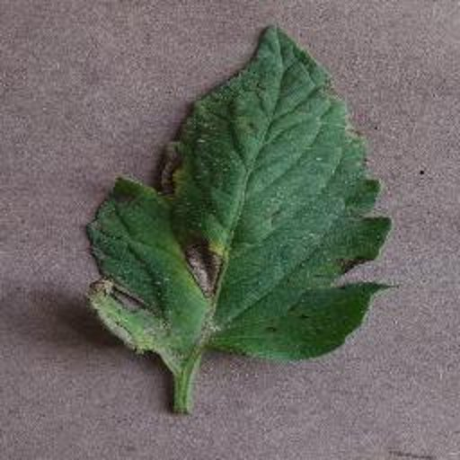
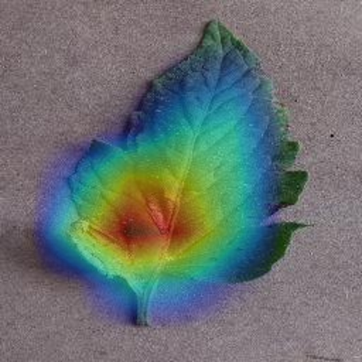

Holds up
- One leaf, filling most of the frame
- Even light, plain background, like the PlantVillage photographs it learned from
- One of the 38 classes it was trained on
- Visible lesions that look like the published examples
Plant leaf disease detection · project BT40
EfficientNet-B0 trained on 36,762 leaf photographs across 38 classes. Drop one photo to get the prediction, the two alternatives it weighed, and the pixels that decided it.
38 classes · 43,306 development images
validation macro F1 0.9937 · single seed


Static demo. There is no backend yet, so the two cases are real checkpoint output on held out test images, frozen at build time. Your own file never leaves the page.
Drop a leaf photo here
or click to choose a file · JPG, PNG or WEBP up to 10 MB
The first pass answers. The second pass explains. Both run on a frozen checkpoint, never on your training data.
The photo becomes a 224 by 224 tensor and is normalised with the mean and standard deviation stored inside the checkpoint, so the demo cannot drift from the evaluation scripts.
Convolutions and pooling collapse the leaf into 38 logits, then softmax turns them into probabilities. The top three come back with the gap between them.
Grad-CAM backpropagates only the winning class score to the last convolution layer, weights each channel by its average gradient, and paints the result over the photo.
It shows you the pixels behind the answer.
Written down here rather than discovered in front of a guide.
On the SmallCNN test split, Soybean___healthy was predicted as Pepper,_bell___healthy in 20 cases. Two different crops, both labelled healthy. That pattern is a background shortcut until the heat map proves otherwise, which is why the heat map is part of this page and not an appendix.
A softmax probability over 38 classes, under the crop and condition shown. It is not a diagnosis and it is not calibrated to a clinician's confidence.
A dominant top one and a near tie are different situations. The hard case on this page ends 72.3 to 26.8 between two tomato diseases, and that near tie is the useful signal.
So you can see whether the model looked at the leaf or at the background. Warm colour on a lesion is consistent with using the symptom. Warm colour on the pot or the frame edge is evidence of a shortcut.
Partly. It was trained on controlled lab photographs, so field photos are harder. The measured numbers on this page come from held out PlantVillage images, not from farm photographs.
Macro F1 0.9937 on 6,544 validation images and 0.9931 on 10,709 locked test images, both from a single seed. The test split was scored once as a reporting pass, after the model was already chosen.
No. Treatment advice is not in this build. A prediction is a reason to look closer or ask an extension service, not a prescription.
The checkpoint itself, its frozen manifests and the evaluation scripts in this repository. Every value on this page was generated by scripts/make_demo_assets.py.
No. This page is static, there is no backend, and the two cases ship as files. A photo you drop stays in your browser.
Read from the checkpoint at build time, so this block cannot disagree with the weights.